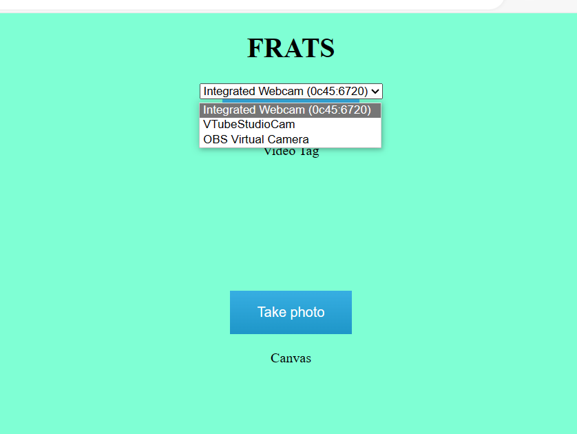
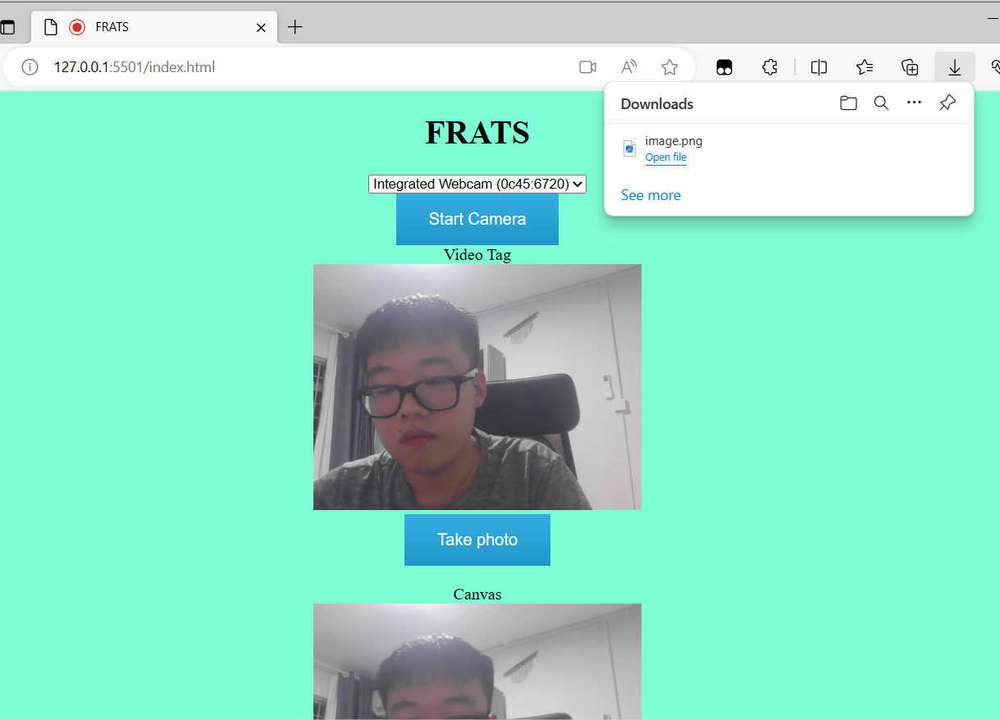

| week - 1 | week - 2 | week - 3 | week - 4 | week - 5 | week - 10 | |
For week 3, we have not made any changes to our idea.
So I will continue with the development of the FRATS website. Last week,I have implemented
the camera for FRATS. This week, I realized that even though we are only using a webcam now,
we might need to use other cameras in the future. I have edited the code for the website so
that users can choose the camera they want to use.

And at the same time, I made some changes to the take photo button. Now when a user uses that button,
the photo will be taken and simultaneously, the website will download the image, enabling the user
to upload the image to the database.

Now I am still trying to find a good way to upload the image to database as I am not so familiar with
the database that we are using for this project.